- Object ID: 00000018WIA30931190GYZ
- Topic ID: id_2038844 Version: 1.20
- Date: Sep 16, 2025 2:54:04 AM
Physiological Data Viewer tool
The Physiological Data Viewer tool allows you to examine physiological data for the purpose of investigating the patient monitoring subsystem and gating.
About this task
Procedure
- Navigate to Service Browser > Utilities > Physiological Data Viewer.
- Click Click here to start this tool to launch the tool.
Figure 1. Launch Physiological Data Viewer 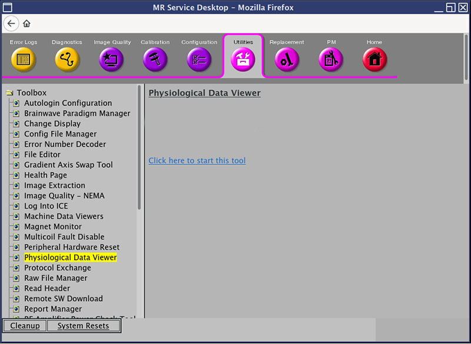
- The Physiological Data Viewer tool will launch, displaying two user interfaces:
- The Control window on the left is the main tool interface and controls what data is to be plotted, the time range, display options, the ability to create archive files, and exiting the tool.
- The Data window on the right is where the physiological data is viewed, and details of the system can be seen.
Figure 2. Physiological Data Viewer, after launch but before data load 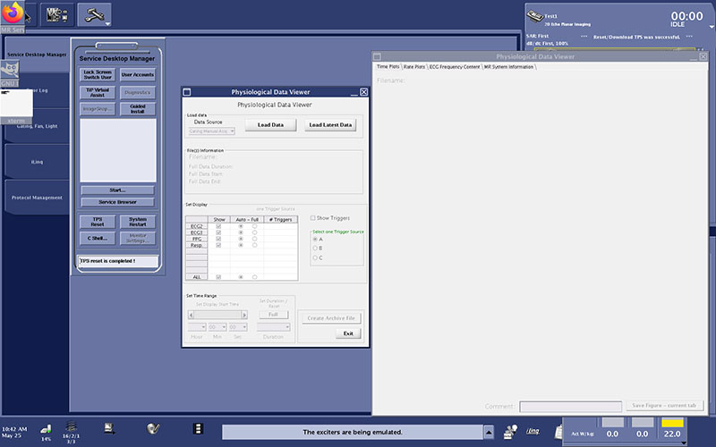
- Physiological Data Viewer - User Interface
- Click Load Latest Data to load the most recent physiological data file set that is saved. Alternatively, click Load Data to launch a file selection window where the user can select from any saved physiological data set on the system.
Figure 3. Load Data 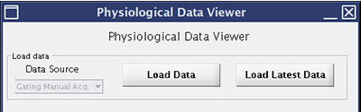
- Review the file information using the date and timestamp embedded in the file name.Note Files that end with the same timestamp are considered a single physiological data set. Select any one of these files to load the complete data set.
Figure 4. File(s) Information 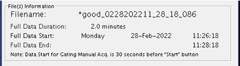
- In the Set Display section, select which waveform(s) should appear. You must select a minimum of one waveform:
- The Auto or Full radio button next to the waveform check box selects the vertical limits applied for the waveform plots.
- To select the same settings for all waveforms, select the ALL check box along with the corresponding Auto or Full radio button at the bottom of the Set Display table.
Figure 5. Set Display 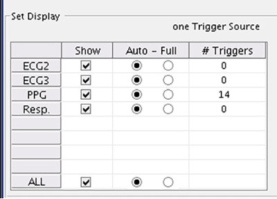
- To display the trigger annotation on the waveform plot(s), select the Show Triggers check box. To select the trigger source, select ECG Vector, o; ECG Vector II, x; or ECG Standard, +.
Figure 6. Show Triggers 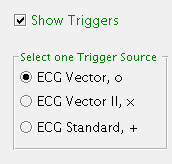
- Use the Set Time Range section to specify the start time of the data display either as relative with the slider bar or as absolute with the hour, minute, second menus. Select the duration of the data display from the Duration menu. Also, you can display the full data duration by clicking Full.Note The plot display could slow down with very long duration waveforms.
Figure 7. Set Time Range 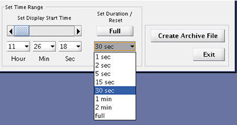
- To capture or highlight a particular aspect of the data:
- Select the desired tab and data display range (only this tab, not all tabs, will be saved to image file).
- (Optional) type a description of the data into the Comment field.
- At the bottom of Data Window, click Save Figure - current tab, change the default file name (if desired), and click Save.
- The image file will be included in the archive file if Create Archive File is clicked.
- Create an archive of the data set by clicking Create Archive File. The archive collects all source data files of this data set, any user-generated figures made since the previous data-load and engineering debugging log files, and saves them as a single compressed file.
- Click Load Latest Data to load the most recent physiological data file set that is saved. Alternatively, click Load Data to launch a file selection window where the user can select from any saved physiological data set on the system.
- Physiological Data Viewer - Data
- Review the waveforms that are displayed. Note that the displayed waveforms are replotted any time a selection is updated.
Figure 8. Physiological Data Viewer, Data Window, Time Plots tab 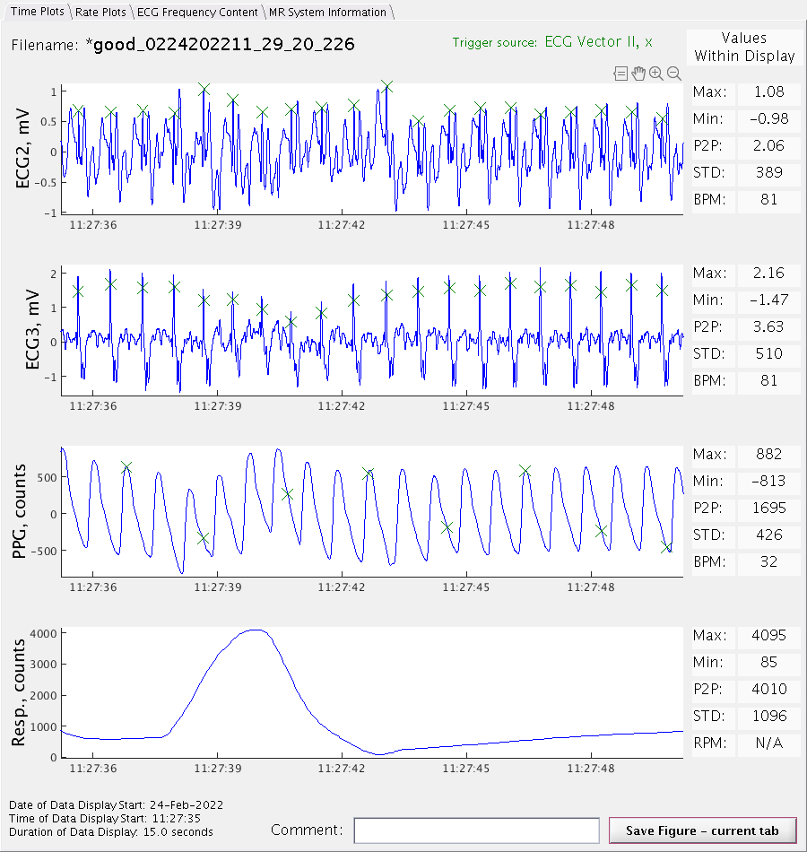
- The tabs in the upper left corner allow you to choose between four different features: Time Plots, Rate Plots, ECG Frequency Content, or MR System Information.
Figure 9. Data Window feature selection tabs 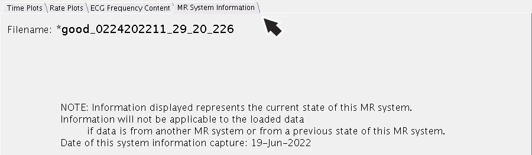
- The icons for Data Cursor (rectangle), Pan (hand), Zoom In (+ magnifying glass) and Zoom Out (- magnifying glass) are visible in the upper right of each plot, when your cursor hovers over that plot. Changes made in one plot will automatically reflect on all other plots on all tabs.
Figure 10. Window icons 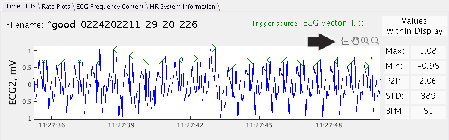
- The Rate Plots tab shows the rate data for each waveform and Trigger SourceNote
- Data that is generated in the Gating Control section of the Gating, Fan, Light tab. Rate data is generated from trigger data.
- Rate data is dependent on which trigger source is selected.
- Rate data will not exist if the corresponding trigger data does not exist.
- The rate plots are useful for identifying regions of the recordings where false triggering is occurring.
- False positive triggers, in addition to normal triggers, will appear as doubled heart rates.
- False negative triggers will appear as halved or lower heart rate.
- Regions of the recording where the heart rate is steady indicates good, stable triggering.
Figure 11. Physiological Data Viewer, Data Window, Rate Plots tab 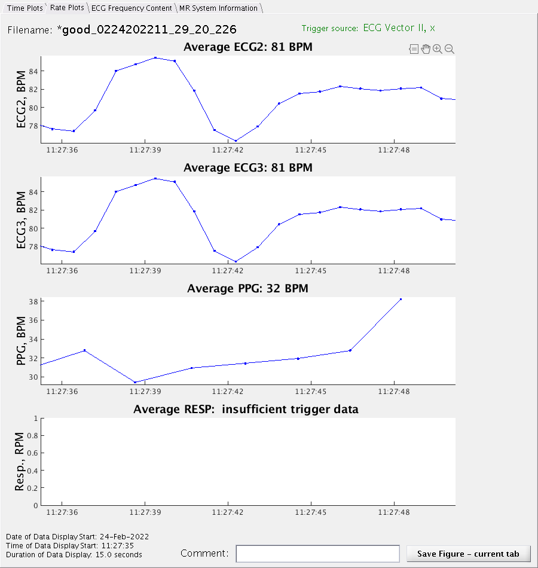
- The ECG Frequency Content tab shows the frequency content for ECG waveforms only. Frequency spikes in the 0 to 20 Hz range are heartbeats from the patient. Anything of a higher frequency is from electronics or an outside source.
Figure 12. Physiological Data Viewer, Data Window, ECG Frequency Content tab 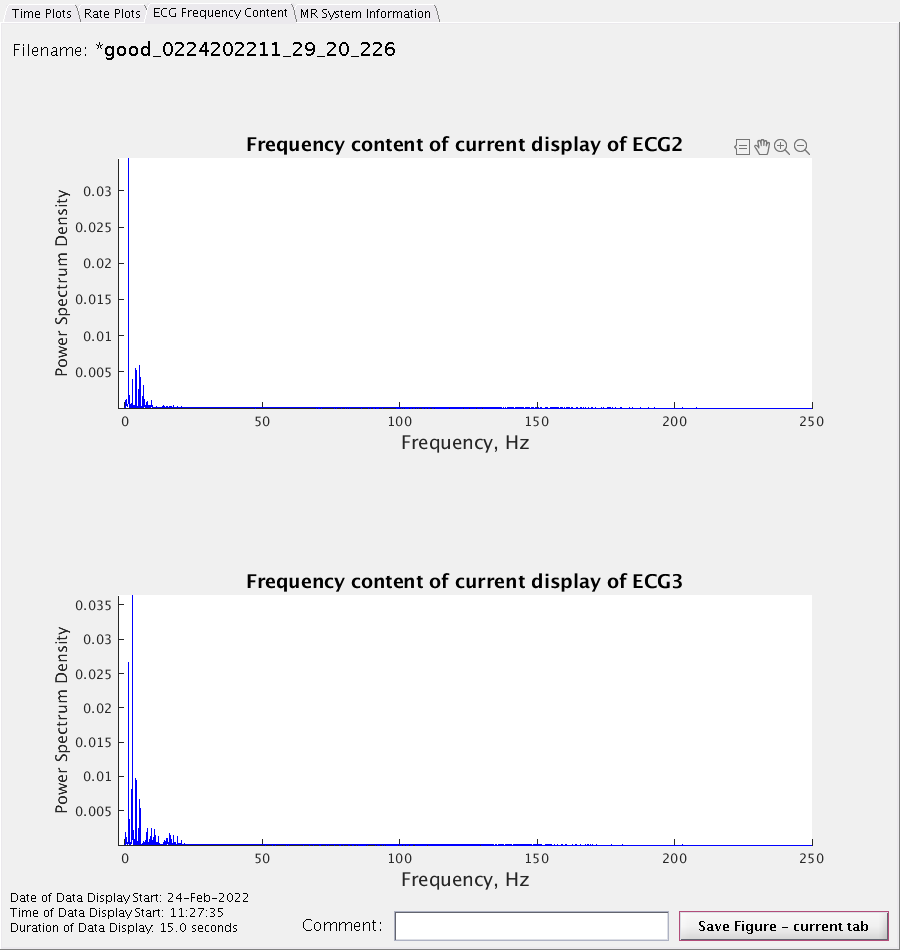
- The MR System Information tab shows the system information.
Figure 13. MR System Information tab 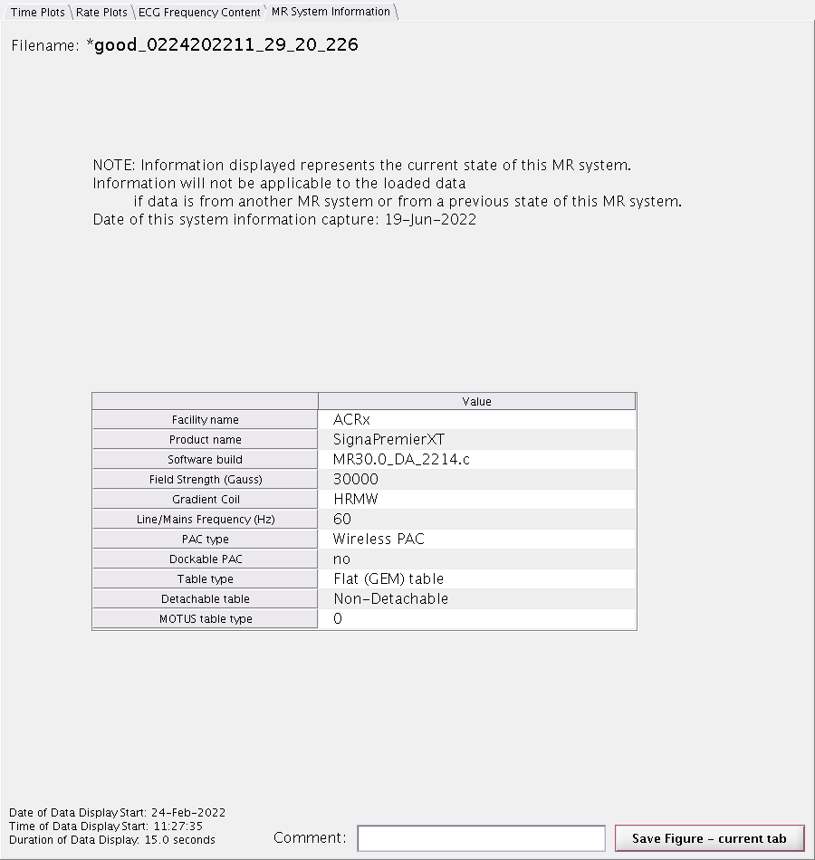
- Review the waveforms that are displayed. Note that the displayed waveforms are replotted any time a selection is updated.